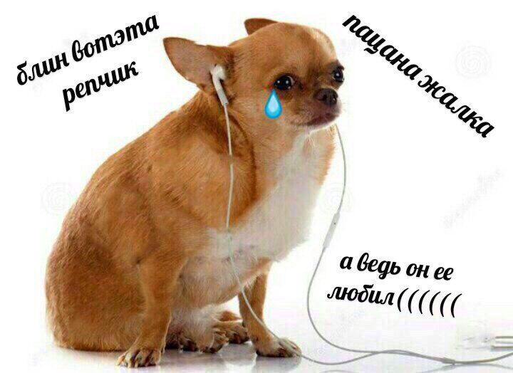
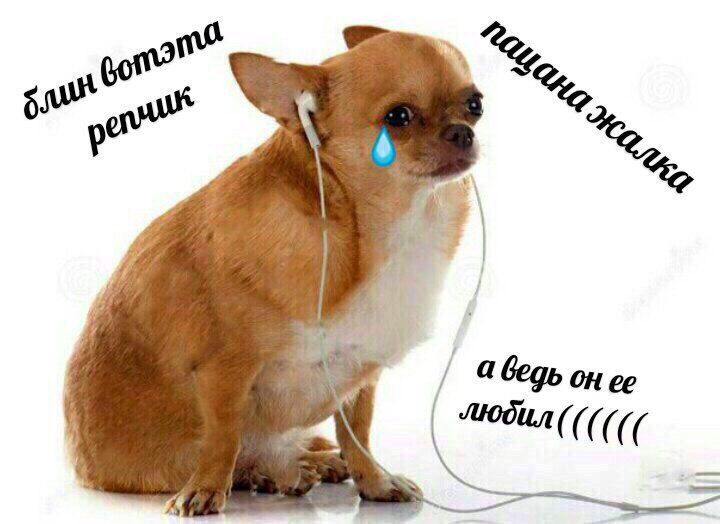

Заметался пожар голубой,
Позабылись родимые дали.
В первый раз я запел про любовь,
В первый раз отрекаюсь скандалить.
Был я весь — как запущенный сад,
Был на женщин и зелие падкий.
Разонравилось пить и плясать
И терять свою жизнь без оглядки.
Мне бы только смотреть на тебя,
Видеть глаз злато-карий омут,
И чтоб, прошлое не любя,
Ты уйти не смогла к другому.
Поступь нежная, легкий стан,
Если б знала ты сердцем упорным,
Как умеет любить хулиган,
Как умеет он быть покорным.
Я б навеки забыл кабаки
И стихи бы писать забросил.
Только б тонко касаться руки
И волос твоих цветом в осень.
Я б навеки пошел за тобой
Хоть в свои, хоть в чужие дали…
В первый раз я запел про любовь,
В первый раз отрекаюсь скандалить.
(С. Есенин)
.